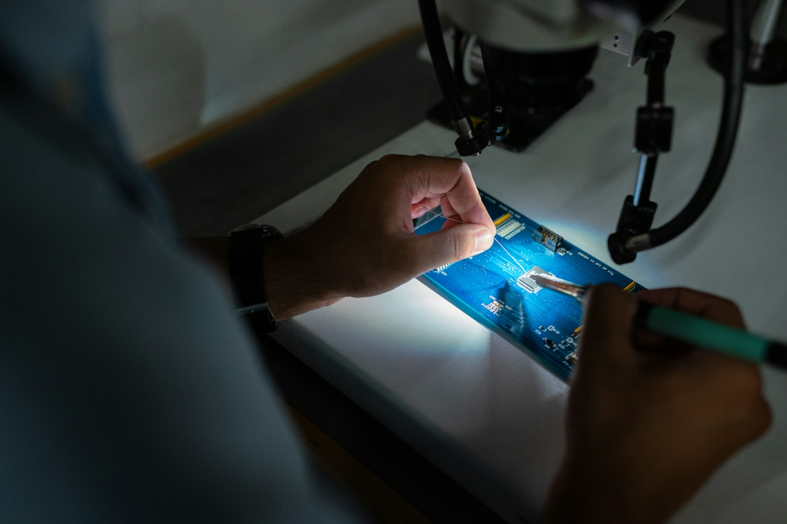

从观察现场，到融入日常。
观察工作
一起梳理关键步骤与容易出现歧义的环节。
试验场景
用代表性样本验证判断规则与使用体验。
融入日常
整理部署条件、操作说明与问题反馈渠道。
从现场场景，找到应用的切入点。
从实际任务出发，明确每一项工作的范围与连接方式。
现场信息采集
讨论图像、设备与人工录入等信息来源，明确采集条件和数据整理方式。
过程辅助判断
将识别结果与业务规则结合，为检查、分类和流程提醒提供辅助依据。
应用界面落地
围绕现场角色设计简洁界面，兼顾状态提示、人工确认与记录追溯。
开始之前，你可能想知道。
是否需要一次改造整个流程？
可以先选择一个边界清晰的环节，验证后再讨论是否延伸。
自动判断与人工操作怎样配合？
在设计中明确人工复核和异常处理入口，关键操作仍由对应责任人确认。